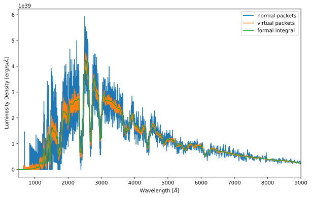

You can interact with this notebook online: Launch interactive version
Quickstart for TARDIS¶
Every simulation run requires the atomic database (for more info refer to atomic data) and a configuration file (more info at configuration). You can obtain a copy of the atomic database from the (https://github.com/tardis-sn/tardis-refdata) repository (atom_data subfolder). We recommended to use the kurucz_cd23_chianti_H_He.h5 dataset (which is auto-downloaded in the second cell already). The
configuration file for this quickstart is tardis_example.yml, which can be downloaded here), though this file is auto-downloaded in the third cell.
After the installation, start a Jupyter server executing jupyter notebook on the command line in a directory that contains this quickstart.
[1]:
from tardis import run_tardis
from tardis.io.atom_data.util import download_atom_data
/usr/share/miniconda3/envs/tardis/lib/python3.7/importlib/_bootstrap.py:219: QAWarning: pyne.data is not yet QA compliant.
return f(*args, **kwds)
Downloading the atomic data¶
[2]:
# the data is automatically downloaded
download_atom_data('kurucz_cd23_chianti_H_He')
Downloading the example file¶
[3]:
!curl -O https://raw.githubusercontent.com/tardis-sn/tardis/master/docs/tardis_example.yml
% Total % Received % Xferd Average Speed Time Time Time Current
Dload Upload Total Spent Left Speed
100 980 100 980 0 0 15555 0 --:--:-- --:--:-- --:--:-- 15555
Running the simulation (long output)¶
Note
The progress of the simulation can be tracked using progress bars which are displayed when the notebook is run, but are not displayed in the documentation.
[4]:
#TARDIS now uses the data in the data repo
sim = run_tardis('tardis_example.yml', log_level = "Info")
[py.warnings ][WARNING] /usr/share/miniconda3/envs/tardis/lib/python3.7/site-packages/traitlets/traitlets.py:3036: FutureWarning: --rc={'figure.dpi': 96} for dict-traits is deprecated in traitlets 5.0. You can pass --rc <key=value> ... multiple times to add items to a dict.
FutureWarning,
(warnings.py:110)
[tardis.plasma.standard_plasmas][INFO ] Reading Atomic Data from kurucz_cd23_chianti_H_He.h5 (standard_plasmas.py:92)
[tardis.io.atom_data.util][INFO ] Atom Data kurucz_cd23_chianti_H_He.h5 not found in local path.
Exists in TARDIS Data repo /home/runner/Downloads/tardis-data/kurucz_cd23_chianti_H_He.h5 (util.py:34)
[tardis.io.atom_data.base][INFO ] Reading Atom Data with: UUID = 6f7b09e887a311e7a06b246e96350010 MD5 = 864f1753714343c41f99cb065710cace (base.py:204)
[tardis.io.atom_data.base][INFO ] Non provided Atomic Data: synpp_refs, photoionization_data, yg_data, two_photon_data (base.py:209)
[tardis.simulation.base][INFO ] Starting iteration 1 of 20 (base.py:367)
[py.warnings ][WARNING] /usr/share/miniconda3/envs/tardis/lib/python3.7/site-packages/astropy/units/equivalencies.py:124: RuntimeWarning: divide by zero encountered in double_scalars
(si.m, si.Hz, lambda x: _si.c.value / x),
(warnings.py:110)
[tardis.simulation.base][INFO ] Luminosity emitted = 7.942e+42 erg / s
Luminosity absorbed = 2.659e+42 erg / s
Luminosity requested = 1.059e+43 erg / s
(base.py:536)
[tardis.simulation.base][INFO ] Plasma stratification: (base.py:503)
| Shell No. | t_rad | next_t_rad | w | next_w |
|---|---|---|---|---|
| 0 | 9.93e+03 | 1.01e+04 | 0.4 | 0.507 |
| 5 | 9.85e+03 | 1.02e+04 | 0.211 | 0.197 |
| 10 | 9.78e+03 | 1.01e+04 | 0.143 | 0.117 |
| 15 | 9.71e+03 | 9.87e+03 | 0.105 | 0.0869 |
[tardis.simulation.base][INFO ] Current t_inner = 9933.952 K
Expected t_inner for next iteration = 10703.212 K
(base.py:531)
[tardis.simulation.base][INFO ] Starting iteration 2 of 20 (base.py:367)
[py.warnings ][WARNING] /usr/share/miniconda3/envs/tardis/lib/python3.7/site-packages/astropy/units/equivalencies.py:124: RuntimeWarning:
divide by zero encountered in double_scalars
(warnings.py:110)
[tardis.simulation.base][INFO ] Luminosity emitted = 1.071e+43 erg / s
Luminosity absorbed = 3.576e+42 erg / s
Luminosity requested = 1.059e+43 erg / s
(base.py:536)
[tardis.simulation.base][INFO ] Plasma stratification: (base.py:503)
| Shell No. | t_rad | next_t_rad | w | next_w |
|---|---|---|---|---|
| 0 | 1.01e+04 | 1.08e+04 | 0.507 | 0.525 |
| 5 | 1.02e+04 | 1.1e+04 | 0.197 | 0.203 |
| 10 | 1.01e+04 | 1.08e+04 | 0.117 | 0.125 |
| 15 | 9.87e+03 | 1.05e+04 | 0.0869 | 0.0933 |
[tardis.simulation.base][INFO ] Current t_inner = 10703.212 K
Expected t_inner for next iteration = 10673.712 K
(base.py:531)
[tardis.simulation.base][INFO ] Starting iteration 3 of 20 (base.py:367)
[tardis.simulation.base][INFO ] Luminosity emitted = 1.074e+43 erg / s
Luminosity absorbed = 3.391e+42 erg / s
Luminosity requested = 1.059e+43 erg / s
(base.py:536)
[tardis.simulation.base][INFO ] Plasma stratification: (base.py:503)
| Shell No. | t_rad | next_t_rad | w | next_w |
|---|---|---|---|---|
| 0 | 1.08e+04 | 1.1e+04 | 0.525 | 0.483 |
| 5 | 1.1e+04 | 1.12e+04 | 0.203 | 0.189 |
| 10 | 1.08e+04 | 1.1e+04 | 0.125 | 0.118 |
| 15 | 1.05e+04 | 1.06e+04 | 0.0933 | 0.0895 |
[tardis.simulation.base][INFO ] Current t_inner = 10673.712 K
Expected t_inner for next iteration = 10635.953 K
(base.py:531)
[tardis.simulation.base][INFO ] Starting iteration 4 of 20 (base.py:367)
[tardis.simulation.base][INFO ] Luminosity emitted = 1.058e+43 erg / s
Luminosity absorbed = 3.352e+42 erg / s
Luminosity requested = 1.059e+43 erg / s
(base.py:536)
[tardis.simulation.base][INFO ] Plasma stratification: (base.py:503)
| Shell No. | t_rad | next_t_rad | w | next_w |
|---|---|---|---|---|
| 0 | 1.1e+04 | 1.1e+04 | 0.483 | 0.469 |
| 5 | 1.12e+04 | 1.12e+04 | 0.189 | 0.182 |
| 10 | 1.1e+04 | 1.1e+04 | 0.118 | 0.113 |
| 15 | 1.06e+04 | 1.07e+04 | 0.0895 | 0.0861 |
[tardis.simulation.base][INFO ] Current t_inner = 10635.953 K
Expected t_inner for next iteration = 10638.407 K
(base.py:531)
[tardis.simulation.base][INFO ] Starting iteration 5 of 20 (base.py:367)
[tardis.simulation.base][INFO ] Luminosity emitted = 1.055e+43 erg / s
Luminosity absorbed = 3.399e+42 erg / s
Luminosity requested = 1.059e+43 erg / s
(base.py:536)
[tardis.simulation.base][INFO ] Iteration converged 1/4 consecutive times. (base.py:255)
[tardis.simulation.base][INFO ] Plasma stratification: (base.py:503)
| Shell No. | t_rad | next_t_rad | w | next_w |
|---|---|---|---|---|
| 0 | 1.1e+04 | 1.1e+04 | 0.469 | 0.479 |
| 5 | 1.12e+04 | 1.13e+04 | 0.182 | 0.178 |
| 10 | 1.1e+04 | 1.1e+04 | 0.113 | 0.113 |
| 15 | 1.07e+04 | 1.07e+04 | 0.0861 | 0.0839 |
[tardis.simulation.base][INFO ] Current t_inner = 10638.407 K
Expected t_inner for next iteration = 10650.202 K
(base.py:531)
[tardis.simulation.base][INFO ] Starting iteration 6 of 20 (base.py:367)
[tardis.simulation.base][INFO ] Luminosity emitted = 1.061e+43 erg / s
Luminosity absorbed = 3.398e+42 erg / s
Luminosity requested = 1.059e+43 erg / s
(base.py:536)
[tardis.simulation.base][INFO ] Iteration converged 2/4 consecutive times. (base.py:255)
[tardis.simulation.base][INFO ] Plasma stratification: (base.py:503)
| Shell No. | t_rad | next_t_rad | w | next_w |
|---|---|---|---|---|
| 0 | 1.1e+04 | 1.1e+04 | 0.479 | 0.47 |
| 5 | 1.13e+04 | 1.12e+04 | 0.178 | 0.185 |
| 10 | 1.1e+04 | 1.11e+04 | 0.113 | 0.112 |
| 15 | 1.07e+04 | 1.07e+04 | 0.0839 | 0.0856 |
[tardis.simulation.base][INFO ] Current t_inner = 10650.202 K
Expected t_inner for next iteration = 10645.955 K
(base.py:531)
[tardis.simulation.base][INFO ] Starting iteration 7 of 20 (base.py:367)
[tardis.simulation.base][INFO ] Luminosity emitted = 1.061e+43 erg / s
Luminosity absorbed = 3.382e+42 erg / s
Luminosity requested = 1.059e+43 erg / s
(base.py:536)
[tardis.simulation.base][INFO ] Iteration converged 3/4 consecutive times. (base.py:255)
[tardis.simulation.base][INFO ] Plasma stratification: (base.py:503)
| Shell No. | t_rad | next_t_rad | w | next_w |
|---|---|---|---|---|
| 0 | 1.1e+04 | 1.1e+04 | 0.47 | 0.47 |
| 5 | 1.12e+04 | 1.13e+04 | 0.185 | 0.178 |
| 10 | 1.11e+04 | 1.11e+04 | 0.112 | 0.112 |
| 15 | 1.07e+04 | 1.07e+04 | 0.0856 | 0.086 |
[tardis.simulation.base][INFO ] Current t_inner = 10645.955 K
Expected t_inner for next iteration = 10642.050 K
(base.py:531)
[tardis.simulation.base][INFO ] Starting iteration 8 of 20 (base.py:367)
[tardis.simulation.base][INFO ] Luminosity emitted = 1.062e+43 erg / s
Luminosity absorbed = 3.350e+42 erg / s
Luminosity requested = 1.059e+43 erg / s
(base.py:536)
[tardis.simulation.base][INFO ] Iteration converged 4/4 consecutive times. (base.py:255)
[tardis.simulation.base][INFO ] Plasma stratification: (base.py:503)
| Shell No. | t_rad | next_t_rad | w | next_w |
|---|---|---|---|---|
| 0 | 1.1e+04 | 1.11e+04 | 0.47 | 0.472 |
| 5 | 1.13e+04 | 1.14e+04 | 0.178 | 0.175 |
| 10 | 1.11e+04 | 1.11e+04 | 0.112 | 0.111 |
| 15 | 1.07e+04 | 1.07e+04 | 0.086 | 0.084 |
[tardis.simulation.base][INFO ] Current t_inner = 10642.050 K
Expected t_inner for next iteration = 10636.106 K
(base.py:531)
[tardis.simulation.base][INFO ] Starting iteration 9 of 20 (base.py:367)
[tardis.simulation.base][INFO ] Luminosity emitted = 1.052e+43 erg / s
Luminosity absorbed = 3.411e+42 erg / s
Luminosity requested = 1.059e+43 erg / s
(base.py:536)
[tardis.simulation.base][INFO ] Iteration converged 5/4 consecutive times. (base.py:255)
[tardis.simulation.base][INFO ] Plasma stratification: (base.py:503)
| Shell No. | t_rad | next_t_rad | w | next_w |
|---|---|---|---|---|
| 0 | 1.11e+04 | 1.11e+04 | 0.472 | 0.469 |
| 5 | 1.14e+04 | 1.15e+04 | 0.175 | 0.17 |
| 10 | 1.11e+04 | 1.11e+04 | 0.111 | 0.109 |
| 15 | 1.07e+04 | 1.08e+04 | 0.084 | 0.0822 |
[tardis.simulation.base][INFO ] Current t_inner = 10636.106 K
Expected t_inner for next iteration = 10654.313 K
(base.py:531)
[tardis.simulation.base][INFO ] Starting iteration 10 of 20 (base.py:367)
[tardis.simulation.base][INFO ] Luminosity emitted = 1.070e+43 erg / s
Luminosity absorbed = 3.335e+42 erg / s
Luminosity requested = 1.059e+43 erg / s
(base.py:536)
[tardis.simulation.base][INFO ] Plasma stratification: (base.py:503)
| Shell No. | t_rad | next_t_rad | w | next_w |
|---|---|---|---|---|
| 0 | 1.11e+04 | 1.1e+04 | 0.469 | 0.475 |
| 5 | 1.15e+04 | 1.14e+04 | 0.17 | 0.177 |
| 10 | 1.11e+04 | 1.11e+04 | 0.109 | 0.112 |
| 15 | 1.08e+04 | 1.06e+04 | 0.0822 | 0.0878 |
[tardis.simulation.base][INFO ] Current t_inner = 10654.313 K
Expected t_inner for next iteration = 10628.190 K
(base.py:531)
[tardis.simulation.base][INFO ] Starting iteration 11 of 20 (base.py:367)
[tardis.simulation.base][INFO ] Luminosity emitted = 1.053e+43 erg / s
Luminosity absorbed = 3.363e+42 erg / s
Luminosity requested = 1.059e+43 erg / s
(base.py:536)
[tardis.simulation.base][INFO ] Iteration converged 1/4 consecutive times. (base.py:255)
[tardis.simulation.base][INFO ] Plasma stratification: (base.py:503)
| Shell No. | t_rad | next_t_rad | w | next_w |
|---|---|---|---|---|
| 0 | 1.1e+04 | 1.1e+04 | 0.475 | 0.472 |
| 5 | 1.14e+04 | 1.12e+04 | 0.177 | 0.184 |
| 10 | 1.11e+04 | 1.1e+04 | 0.112 | 0.114 |
| 15 | 1.06e+04 | 1.06e+04 | 0.0878 | 0.0859 |
[tardis.simulation.base][INFO ] Current t_inner = 10628.190 K
Expected t_inner for next iteration = 10644.054 K
(base.py:531)
[tardis.simulation.base][INFO ] Starting iteration 12 of 20 (base.py:367)
[tardis.simulation.base][INFO ] Luminosity emitted = 1.056e+43 erg / s
Luminosity absorbed = 3.420e+42 erg / s
Luminosity requested = 1.059e+43 erg / s
(base.py:536)
[tardis.simulation.base][INFO ] Plasma stratification: (base.py:503)
| Shell No. | t_rad | next_t_rad | w | next_w |
|---|---|---|---|---|
| 0 | 1.1e+04 | 1.11e+04 | 0.472 | 0.467 |
| 5 | 1.12e+04 | 1.13e+04 | 0.184 | 0.176 |
| 10 | 1.1e+04 | 1.11e+04 | 0.114 | 0.11 |
| 15 | 1.06e+04 | 1.08e+04 | 0.0859 | 0.0821 |
[tardis.simulation.base][INFO ] Current t_inner = 10644.054 K
Expected t_inner for next iteration = 10653.543 K
(base.py:531)
[tardis.simulation.base][INFO ] Starting iteration 13 of 20 (base.py:367)
[tardis.simulation.base][INFO ] Luminosity emitted = 1.062e+43 erg / s
Luminosity absorbed = 3.406e+42 erg / s
Luminosity requested = 1.059e+43 erg / s
(base.py:536)
[tardis.simulation.base][INFO ] Iteration converged 1/4 consecutive times. (base.py:255)
[tardis.simulation.base][INFO ] Plasma stratification: (base.py:503)
| Shell No. | t_rad | next_t_rad | w | next_w |
|---|---|---|---|---|
| 0 | 1.11e+04 | 1.11e+04 | 0.467 | 0.466 |
| 5 | 1.13e+04 | 1.13e+04 | 0.176 | 0.18 |
| 10 | 1.11e+04 | 1.11e+04 | 0.11 | 0.111 |
| 15 | 1.08e+04 | 1.08e+04 | 0.0821 | 0.0841 |
[tardis.simulation.base][INFO ] Current t_inner = 10653.543 K
Expected t_inner for next iteration = 10647.277 K
(base.py:531)
[tardis.simulation.base][INFO ] Starting iteration 14 of 20 (base.py:367)
[tardis.simulation.base][INFO ] Luminosity emitted = 1.063e+43 erg / s
Luminosity absorbed = 3.369e+42 erg / s
Luminosity requested = 1.059e+43 erg / s
(base.py:536)
[tardis.simulation.base][INFO ] Iteration converged 2/4 consecutive times. (base.py:255)
[tardis.simulation.base][INFO ] Plasma stratification: (base.py:503)
| Shell No. | t_rad | next_t_rad | w | next_w |
|---|---|---|---|---|
| 0 | 1.11e+04 | 1.11e+04 | 0.466 | 0.469 |
| 5 | 1.13e+04 | 1.13e+04 | 0.18 | 0.182 |
| 10 | 1.11e+04 | 1.1e+04 | 0.111 | 0.113 |
| 15 | 1.08e+04 | 1.07e+04 | 0.0841 | 0.0854 |
[tardis.simulation.base][INFO ] Current t_inner = 10647.277 K
Expected t_inner for next iteration = 10638.875 K
(base.py:531)
[tardis.simulation.base][INFO ] Starting iteration 15 of 20 (base.py:367)
[tardis.simulation.base][INFO ] Luminosity emitted = 1.053e+43 erg / s
Luminosity absorbed = 3.417e+42 erg / s
Luminosity requested = 1.059e+43 erg / s
(base.py:536)
[tardis.simulation.base][INFO ] Iteration converged 3/4 consecutive times. (base.py:255)
[tardis.simulation.base][INFO ] Plasma stratification: (base.py:503)
| Shell No. | t_rad | next_t_rad | w | next_w |
|---|---|---|---|---|
| 0 | 1.11e+04 | 1.1e+04 | 0.469 | 0.484 |
| 5 | 1.13e+04 | 1.13e+04 | 0.182 | 0.181 |
| 10 | 1.1e+04 | 1.1e+04 | 0.113 | 0.113 |
| 15 | 1.07e+04 | 1.07e+04 | 0.0854 | 0.0858 |
[tardis.simulation.base][INFO ] Current t_inner = 10638.875 K
Expected t_inner for next iteration = 10655.125 K
(base.py:531)
[tardis.simulation.base][INFO ] Starting iteration 16 of 20 (base.py:367)
[tardis.simulation.base][INFO ] Luminosity emitted = 1.059e+43 erg / s
Luminosity absorbed = 3.445e+42 erg / s
Luminosity requested = 1.059e+43 erg / s
(base.py:536)
[tardis.simulation.base][INFO ] Iteration converged 4/4 consecutive times. (base.py:255)
[tardis.simulation.base][INFO ] Plasma stratification: (base.py:503)
| Shell No. | t_rad | next_t_rad | w | next_w |
|---|---|---|---|---|
| 0 | 1.1e+04 | 1.1e+04 | 0.484 | 0.472 |
| 5 | 1.13e+04 | 1.13e+04 | 0.181 | 0.177 |
| 10 | 1.1e+04 | 1.1e+04 | 0.113 | 0.113 |
| 15 | 1.07e+04 | 1.06e+04 | 0.0858 | 0.0858 |
[tardis.simulation.base][INFO ] Current t_inner = 10655.125 K
Expected t_inner for next iteration = 10655.561 K
(base.py:531)
[tardis.simulation.base][INFO ] Starting iteration 17 of 20 (base.py:367)
[tardis.simulation.base][INFO ] Luminosity emitted = 1.067e+43 erg / s
Luminosity absorbed = 3.372e+42 erg / s
Luminosity requested = 1.059e+43 erg / s
(base.py:536)
[tardis.simulation.base][INFO ] Plasma stratification: (base.py:503)
| Shell No. | t_rad | next_t_rad | w | next_w |
|---|---|---|---|---|
| 0 | 1.1e+04 | 1.11e+04 | 0.472 | 0.468 |
| 5 | 1.13e+04 | 1.14e+04 | 0.177 | 0.175 |
| 10 | 1.1e+04 | 1.11e+04 | 0.113 | 0.11 |
| 15 | 1.06e+04 | 1.08e+04 | 0.0858 | 0.0816 |
[tardis.simulation.base][INFO ] Current t_inner = 10655.561 K
Expected t_inner for next iteration = 10636.536 K
(base.py:531)
[tardis.simulation.base][INFO ] Starting iteration 18 of 20 (base.py:367)
[tardis.simulation.base][INFO ] Luminosity emitted = 1.057e+43 erg / s
Luminosity absorbed = 3.365e+42 erg / s
Luminosity requested = 1.059e+43 erg / s
(base.py:536)
[tardis.simulation.base][INFO ] Iteration converged 1/4 consecutive times. (base.py:255)
[tardis.simulation.base][INFO ] Plasma stratification: (base.py:503)
| Shell No. | t_rad | next_t_rad | w | next_w |
|---|---|---|---|---|
| 0 | 1.11e+04 | 1.11e+04 | 0.468 | 0.464 |
| 5 | 1.14e+04 | 1.13e+04 | 0.175 | 0.177 |
| 10 | 1.11e+04 | 1.1e+04 | 0.11 | 0.113 |
| 15 | 1.08e+04 | 1.07e+04 | 0.0816 | 0.0848 |
[tardis.simulation.base][INFO ] Current t_inner = 10636.536 K
Expected t_inner for next iteration = 10641.692 K
(base.py:531)
[tardis.simulation.base][INFO ] Starting iteration 19 of 20 (base.py:367)
[tardis.simulation.base][INFO ] Luminosity emitted = 1.056e+43 erg / s
Luminosity absorbed = 3.405e+42 erg / s
Luminosity requested = 1.059e+43 erg / s
(base.py:536)
[tardis.simulation.base][INFO ] Iteration converged 2/4 consecutive times. (base.py:255)
[tardis.simulation.base][INFO ] Plasma stratification: (base.py:503)
| Shell No. | t_rad | next_t_rad | w | next_w |
|---|---|---|---|---|
| 0 | 1.11e+04 | 1.11e+04 | 0.464 | 0.466 |
| 5 | 1.13e+04 | 1.13e+04 | 0.177 | 0.177 |
| 10 | 1.1e+04 | 1.11e+04 | 0.113 | 0.111 |
| 15 | 1.07e+04 | 1.07e+04 | 0.0848 | 0.0853 |
[tardis.simulation.base][INFO ] Current t_inner = 10641.692 K
Expected t_inner for next iteration = 10650.463 K
(base.py:531)
[tardis.simulation.base][INFO ] Starting iteration 20 of 20 (base.py:367)
[tardis.simulation.base][INFO ] Luminosity emitted = 1.061e+43 erg / s
Luminosity absorbed = 3.401e+42 erg / s
Luminosity requested = 1.059e+43 erg / s
(base.py:536)
[tardis.simulation.base][INFO ] Simulation finished in 20 iterations Simulation took 49.25 s
(base.py:457)
Plotting the Spectrum¶
[5]:
%pylab inline
spectrum = sim.runner.spectrum
spectrum_virtual = sim.runner.spectrum_virtual
spectrum_integrated = sim.runner.spectrum_integrated
figure(figsize=(10,6))
spectrum.plot(label='normal packets')
spectrum_virtual.plot(label='virtual packets')
spectrum_integrated.plot(label='formal integral')
xlabel('Wavelength [$\AA$]')
ylabel('Luminosity Density [erg/s/$\AA$]')
legend()
xlim(500, 9000)
Populating the interactive namespace from numpy and matplotlib
[py.warnings ][WARNING] /usr/share/miniconda3/envs/tardis/lib/python3.7/site-packages/tardis-2021.8.20.0.dev36+g575002cf-py3.7.egg/tardis/montecarlo/montecarlo_numba/formal_integral.py:321: UserWarning:
The number of interpolate_shells was not specified. The value was set to 80.
(warnings.py:110)
[5]:
(500.0, 9000.0)

[ ]: